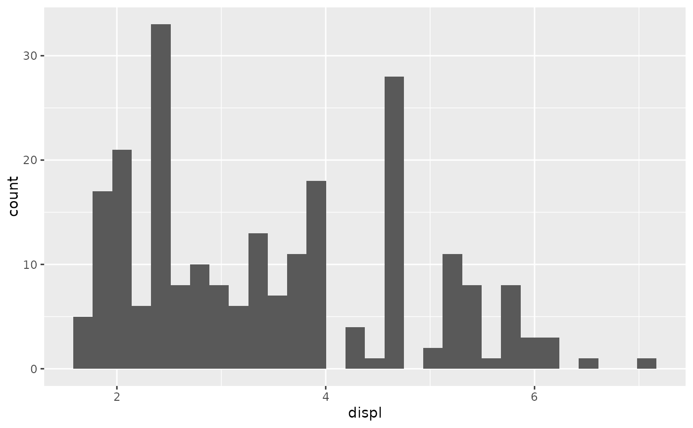
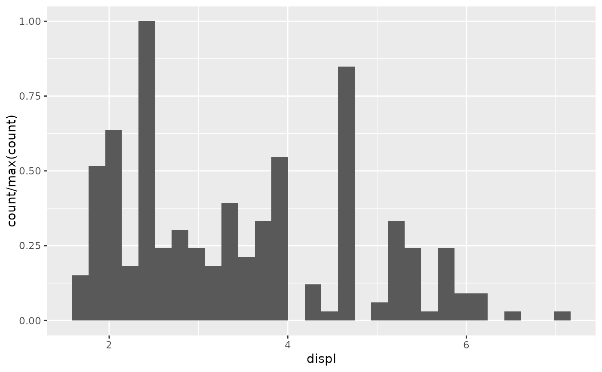
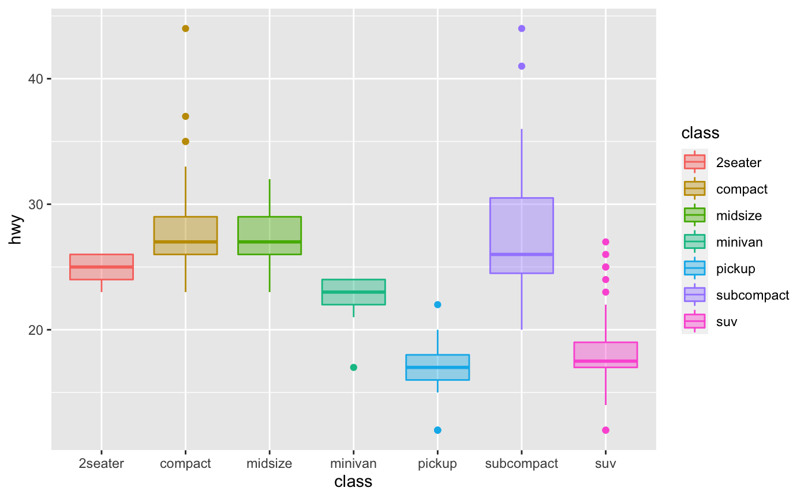
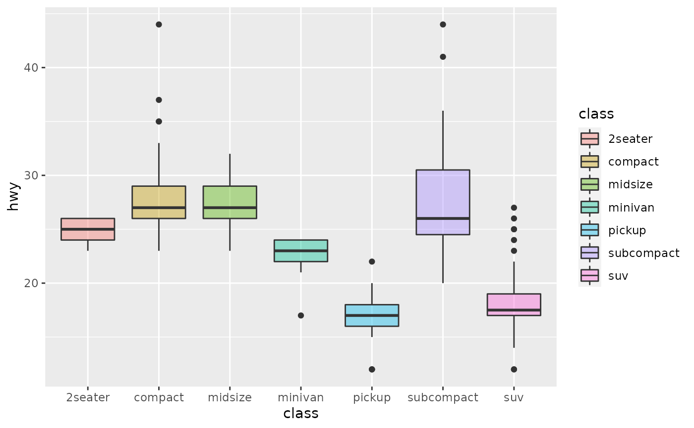

Most aesthetics are mapped from variables found in the data. Sometimes,
however, you want to delay the mapping until later in the rendering process.
ggplot2 has three stages of the data that you can map aesthetics from. The
default is to map at the beginning, using the layer data provided by the
user. The second stage is after the data has been transformed by the layer
stat. The third and last stage is after the data has been transformed and
mapped by the plot scales. The most common example of mapping from stat
transformed data is the height of bars in geom_histogram():
the height does not come from a variable in the underlying data, but
is instead mapped to the count computed by stat_bin(). An example of
mapping from scaled data could be to use a desaturated version of the stroke
colour for fill. If you want to map directly from the layer data you should
not do anything special. In order to map from stat transformed data you
should use the after_stat() function to flag that evaluation of the
aesthetic mapping should be postponed until after stat transformation.
Similarly, you should use after_scale() to flag evaluation of mapping for
after data has been scaled. If you want to map the same aesthetic multiple
times, e.g. map x to a data column for the stat, but remap it for the geom,
you can use the stage() function to collect multiple mappings.
after_stat(x) after_scale(x) stage(start = NULL, after_stat = NULL, after_scale = NULL)
| x | An aesthetic expression using variables calculated by the stat
( |
|---|---|
| start | An aesthetic expression using variables from the layer data. |
| after_stat | An aesthetic expression using variables calculated by the stat. |
| after_scale | An aesthetic expression using layer aesthetics. |
after_stat() replaces the old approaches of using either stat() or
surrounding the variable names with ...
Evaluation after stat transformation will only have access to the variables calculated by the stat. Evaluation after scaling will only have access to the final aesthetics of the layer (including non-mapped, default aesthetics). The original layer data can only be accessed at the first stage.
#># Scale tallest bin to 1 ggplot(mpg, aes(displ)) + geom_histogram(aes(y = after_stat(count / max(count))))#># Use a transparent version of colour for fill ggplot(mpg, aes(class, hwy)) + geom_boxplot(aes(colour = class, fill = after_scale(alpha(colour, 0.4))))# Use stage to modify the scaled fill ggplot(mpg, aes(class, hwy)) + geom_boxplot(aes(fill = stage(class, after_scale = alpha(fill, 0.4))))